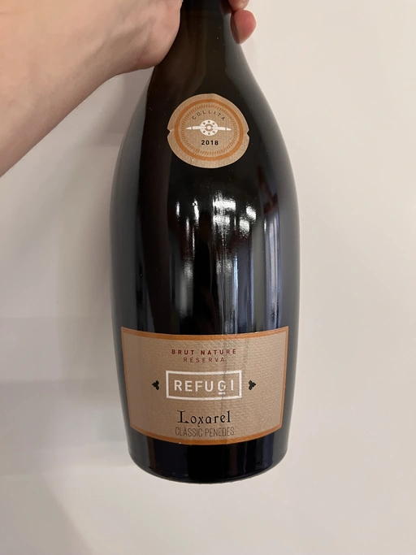
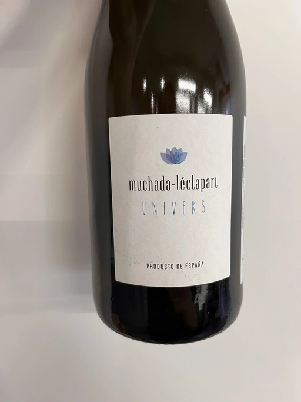
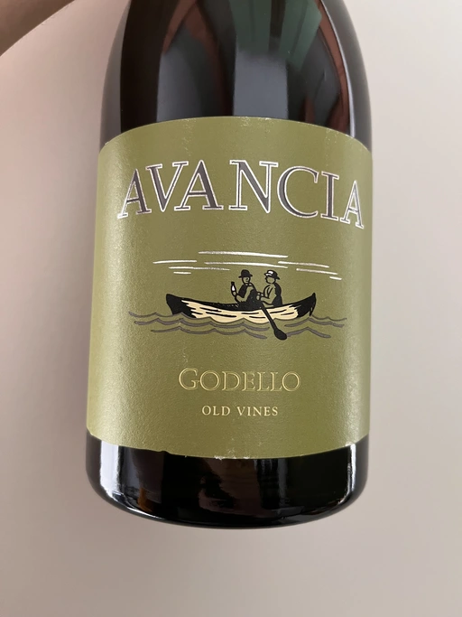
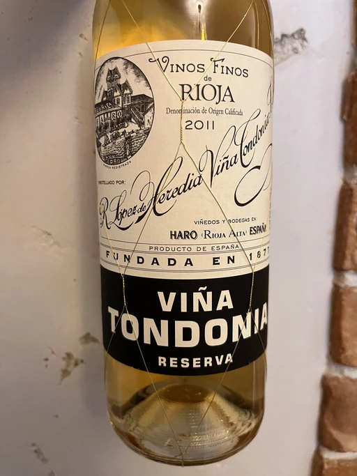
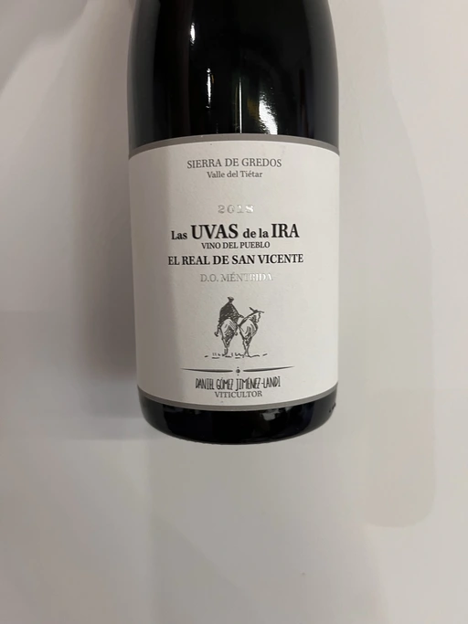
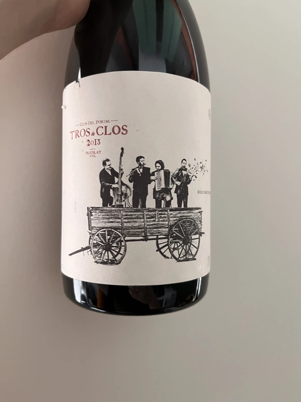
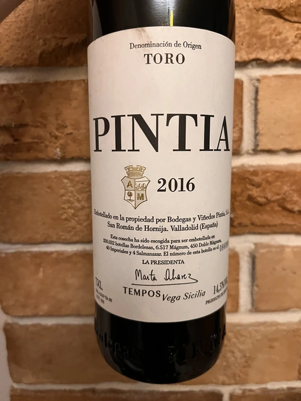

A bit of Spain
Spain is such a vast and notable wine-making region that there are plenty of books and articles on the topic spread all over the internet. Of course, I could just provide a TL;DR version of that information, but one wise man1 shared the seed of laziness with me, and I nurtured it well. So let them wines do the talking as we are having a bit of Spain!
- Loxarel Refugi Brut Nature Reserva 2018
- Muchada-Léclapart Univers 2017
- Avancia Godello 2020
- R. López de Heredia Viña Tondonia Blanco Reserva 2011
- Daniel Gómez Jiménez-Landi Las Uvas de la Ira 2018
- Portal del Priorat Tros De Clos 2013
- Vega Sicilia Pintia 2016
Scores
| Wine #1 | Wine #2 | Wine #3 | Wine #4 | Wine #5 | Wine #6 | Wine #7 | |
|---|---|---|---|---|---|---|---|
| Daria B | 3.60 | 3.60 | 3.80 | 4.60 | 3.60 | 3.60 | 3.70 |
| Atrem O | 4.00 | 3.00 | 4.00 | 4.00 | 4.00 | 4.00 | 4.00 |
| Andrii S | 3.70 | 3.70 | 4.30 | 4.60 | 3.80 | 3.50 | 3.90 |
| Viktoriya Zh | 3.80 | 3.00 | 4.30 | 4.70 | 4.20 | 4.60 | 4.00 |
| Dimitry G | 3.50 | 3.30 | 4.60 | 4.80 | 3.20 | 3.90 | 3.40 |
| Elvira K | 3.70 | 3.50 | 4.30 | 4.60 | 3.70 | 4.00 | 4.00 |
| Andrey U | 2.50 | 2.95 | 4.50 | 4.70 | 3.80 | 4.45 | 4.20 |
| Dmytro Yu | 3.50 | - | 4.20 | 4.80 | 3.80 | 4.60 | 3.40 |
| Boris B | 3.80 | 3.80 | 4.00 | 4.50 | 4.00 | 4.40 | 4.00 |
| amean | rms | sdev | favourite | outcast | price | QPR | |
|---|---|---|---|---|---|---|---|
| Wine #1 | 3.57 | 3.59 | 0.1644 | 1.00 | 1.00 | 830.00 | 1.5382 |
| Wine #2 | 3.36 | 3.37 | 0.1021 | 0.00 | 3.00 | 1141.00 | 0.8371 |
| Wine #3 | 4.22 | 4.23 | 0.0573 | 1.00 | 0.00 | 1013.00 | 3.3288 |
| Wine #4 | 4.59 | 4.59 | 0.0521 | 5.00 | 0.00 | 1567.00 | 3.8576 |
| Wine #5 | 3.79 | 3.80 | 0.0721 | 0.00 | 1.00 | 1053.00 | 1.6668 |
| Wine #6 | 4.12 | 4.14 | 0.1533 | 2.00 | 2.00 | 2465.00 | 1.1624 |
| Wine #7 | 3.84 | 3.85 | 0.0714 | 0.00 | 2.00 | 1947.00 | 0.9779 |
How to read this table:
ameanis arithmetic mean (and not ‘amen’), calculated as sum of all scores divided by count of scores for particular wine. It is more useful thantotal, because on some events some wines are not tasted by all participants.sdevis standard deviation. The bigger this value the more controversial the wine is, meaning that people have different opinions on this one.favouriteis amount of people who marked this wine as favourite of the event.outcastis amount of people who marked this wine as outcast of the event.priceis wine price in UAH.QPRis quality price ratio, calculated in as100 * factorial(rms)/price. The reason behind this totally unprofessional formula is simple. At some point you have to pay more and more to get a little fraction of satisfaction. Factorial used in this formula rewards scores close to the upper bound 120 times more than scores close to the lower bound.
Loxarel Refugi Brut Nature Reserva 2018

- producer: Loxarel
- name: Refugi Brut Nature Reserva
- vintage: 2018
- grapes: Xarel-lo
- appellation: Penedès DO
- location: Spain
- alcohol: 13
- sugar: N/A
- price: 830 UAH
We all love to have a solid trampoline between a workday and a pleasant evening. It must be gentle yet persistent. In my opinion, sparkling wines are meant exactly for this. Josep Mitjans is crazy about traditional sparkling wines. He produced his first 1000 bottles when he was 16. Two years later, in 1987, he registered the Loxarel brand.
You can find a lot of buzzwords around their official site. And while I respect all that, I am a mere drinker, so I care about the quality and the value of the final product in the first place. And this is how Loxarel won me over. Refugi is made of 70 years old vines growing in the old aerodrome field. Partial fermentation of the Xarel-lo in oak barrels of 500 litres. It is aged on sur lie in the old republican army shelter for at least 20 months. But in reality, they disgorge the wine on demand, so it is often aged for a longer time. For example, the bottle we have today was disgorged in June 2022, meaning it spent around 36 months sur lie.
By the way, officially, it’s not Cava, but rather Clàssic Penedès.
Muchada-Léclapart Univers 2017

- producer: Muchada-Léclapart
- name: Univers
- vintage: 2017
- grapes: Palomino Fino
- appellation: Vino de Mesa
- location: Spain
- alcohol: 12
- sugar: N/A
- price: 1141 UAH
Of course, traditional sparkling from Penedès is not something alien to our gatherings. But what about Palomino Fino from Andalusia? Yes, the region is more known for Jerez, a fortified wine made of Palomino Fino. And no, Univers is 12 abv, so don’t worry. A project created by David Léclapart (producer of Champagne) and Alejandro Muchada (winegrower from Cádiz). Their objective is to craft white wines without flower veil (aka flor) and without fortification. Yes, in Andalusia. Luckily, their 3 ha vineyards take advantage of the cool climate of the Atlantic Ocean.
Univers is “pure Palimino grape” from 20 years old vines sourced from a small 0.5 ha plot. Fermented spontaneously and vinified in a steel tank with interior ceramic paint for 9-10 months. Sur lie!
Avancia Godello 2020

- producer: Avancia
- name: Godello
- vintage: 2020
- grapes: Godello
- appellation: Valdeorras DO
- location: Galicia, Spain
- alcohol: 14.5
- sugar: 0.92
- price: 1013 UAH
Valley-of-Gold, a gate to Galicia, because I could not completely omit this region, despite torturing you with it on an almost daily basis. Avancia is a project created from Jorge Ordóñez’s dream to make Godello wines. Jorge Ordóñez found one of the oldest vineyards in Valdeorras - a plot planted by monks in 1904/1910. These vines grow on slate soils intermixed with small quantities of quartz. Avancia farms them using traditional dry viticulture. The grapes are hand harvested and stored in small baskets. The fermentation runs on indigenous yeasts in French oak puncheons and demi-muids (500 and 600 L barrels, respectively). Then the wine spends ten months sur lie with battonage.
R. López de Heredia Viña Tondonia Blanco Reserva 2011

- producer: R. López de Heredia
- name: Viña Tondonia Blanco Reserva
- vintage: 2011
- grapes: Macabeo, Malvasia di Candia Aromatica
- appellation: Rioja DOC
- location: La Rioja, Spain
- alcohol: 12.5
- sugar: N/A
- price: 1567 UAH
- López de Heredia is a bodega with a long history. Even today, the fourth generation of the family produces old-school Rioja wines, like it or not. The bodega is best known for its Viña Tondonia label. And while I am not a fan of their red wines, my heart melts from rosé and white Viña Tondonia. A surprising result from long ageing in contact with oak followed by a few years in a bottle to balance the rough edges from the barrel and shape majestic and opulent wine.
Viña Tondonia Blanco Reserva is a blend of Viura (90%) and Malvasia. It spent six years in used oak barriques before bottling. And 2011 is the most recent release. Lovely.
Daniel Gómez Jiménez-Landi Las Uvas de la Ira 2018

- producer: Daniel Gómez Jiménez-Landi
- name: Las Uvas de la Ira
- vintage: 2018
- grapes: Grenache
- appellation: Méntrida DO
- location: Castilla-La Mancha, Spain
- alcohol: 14.5
- sugar: N/A
- price: 1053 UAH
The Grapes of Wrath. What a good name for a wine made of old-vine high-altitude Garnacha. And it’s not your typical concentrated Garnacha, but rather a delicate, lifted and mineral style. It comes from the same area as Ca’ di Mat. It turns out Curro Barreño and Daniel Gómez Jiménez-Landi are childhood friends. I am pretty sure that there was some mutual influence between these two. And unfortunately, since 2021, Curro has taken over responsibility for Dani’s vineyards in Méntrida. Not sure why though, but we have an opportunity to taste something that’s already gone.
Portal del Priorat Tros De Clos 2013

- producer: Portal del Priorat
- name: Tros De Clos
- vintage: 2013
- grapes: Cariñena
- appellation: Priorat DOC
- location: Catalonia, Spain
- alcohol: 14.5
- sugar: 1.3
- price: 2465 UAH
Priorat is a ruggedly beautiful region in Catalonia. For more than 1000 years, it was an important wine-growing region until phylloxera ruined vineyards. Many abandoned this land, but you can’t resist its potential. Luckily, in the 70s, some crazy guys went on a quest to return this name to its previous glory.
Tros De Clos is a rare gem. It’s a 60+ years old Cariñena growing on slate “Llicorella” mixed with gravel. It spent 12 months in French oak barrels before bottling. By who? Why, Alfredo Arribas, an architect and a winemaker. His shift to wine started in 2001 after acquiring the estate Clos del Portal in Priorat. Today the domain owns more than 50 hectares, where half is dedicated to vineyards and the rest to olive and almond trees. And Mediterranean forest surrounds them. Majestic place.
Vega Sicilia Pintia 2016

- producer: Vega Sicilia
- name: Pintia
- vintage: 2016
- grapes: Tempranillo
- appellation: Toro DO
- location: Castile and León, Spain
- alcohol: 14.5
- sugar: 1.6
- price: 1947 UAH
Hehe, Vega Sicilia. A famous bodega from Ribera del Duero has a side project in Toro called Pintia. The region is getting more and more attention over time. Partially thanks to gifted and well-respected winemakers that opened new wineries here. And since Toro is not as prestigious as Rioja, Priorat or Ribera del Duero, wines from this region usually have incredible value for money.
Pintia is made of 100% Tempranillo. After arriving at the winery, the grapes spend 12 hours in a cold room to preserve fruitiness. Cold maceration for five days, and then it continues in oak. The wine ages in French (70%) and American (30%) oak for 12 months.
Of course it was the famous Vilius from Vilnius!↩︎